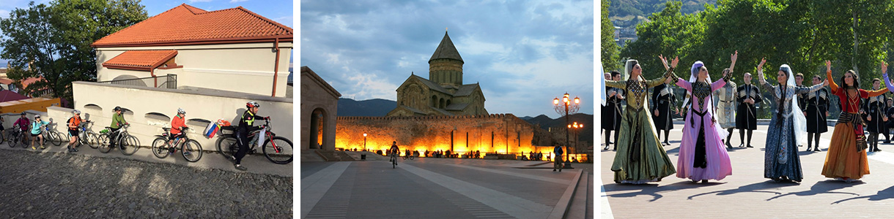

Грузия - это страна, где путешествующий человек видит не только архитектуру или красоты гор, но и получает удовольствие от общения с удивительным народом - грузинами. Не то, чтобы в других странах люди были бы какие-то мрачные, или злые. Но гостеприимству и открытости людей в Грузии можно смело ставить первое место. Грузия - чемпион мира в номинации "самый добрый и гостеприимный народ". Все истории, которые я когда-либо слышал о Грузии, оказались правдой, в чем я убедился во время разведки этого маршрута. Идешь в магазин за покупками - возвращаешься с подарками, не потратив ни копейки. Сидишь в ресторане - тебе приносят кувшин вина в подарок, так как у отца официанта день рождения. Да вот и он сам машет тебе рукой, приглашая выпить с ним вина из глиняной коровы. Это, безусловно, окрашивает путешествие по Грузии в теплые тона. Приятно, когда к тебе такое отношение.
Представляемый маршрут призван познакомить вас именно со страной, с ее жителями, достопримечательностями, кухней и вином. Мы НЕ поедем в высокие горы (но на горизонте они будут всегда), не будем торить перевалы. Это, конечно, тоже немного жалко. Может быть, когда-нибудь в будущем.. Зато мы увидим храмы и монастыри, крепости и дозорные башни. Увидим ущелья и реки. Людей, которые пекут хлеб или перевозят на ослах что-нибудь. Мы посетим ресторанчики, отведаем харчо и оджахури, шашлык и, конечно же, вино.
Маршрут идет по категории "стандартный". Напомню, это более сложная категория, чем "простой". Пробеги в среднем по 60 - 65 км, перевалов нет. Но есть крутые спуски, есть дороги с очень плохим покрытием. Не асфальт, или что хуже, остатки асфальта, уложенного тут году в 1982 ом. Велодорожек в Грузии между городами нет. Трафик же есть. Словом, надо уметь ездить на велосипеде. Размещение в гостиницах, гостевых домах по 2 человека.
Прибытие. Мы прибываем в аэропорт Тбилиси и едем в Боржоми. Боржоми - знаменитый некогда курорт, где прямо из-под земли струится "Боржоми". Но не в бутылках, а в розлив. В курортном парке можно его пить просто из фонтанчика. Не особо вкусный напиток - он идет теплым! Холодный, на мой взгляд, значительно лучше! Питьем "Боржоми", а также прогулкой по ущелью Боржоми к горячим ваннам, мы и займемся в первый день. Вечером, конечно, посидим в ресторане. Тем более есть в Боржоми место, где подают неплохое домашнее вино.
В этот день мы седлаем наши велосипеды и отправляемся в путь. Сначала нанесем визит к царскому дворцу, который есть в этой местности. Романовы бывали на водах, и фотографии августейшей фамилии с чашками у источника часто можно встретить в путеводителе по Боржоми. Был у них тут и дворец. Не в хостеле же жить царственным особам? Затем мы поедем по ущелью вниз, и приедем в сельский район в селение Сурами. Зачем мы привезли вас в эту дыру? Хотим показать, как выглядит не парадная Грузия. Простое селение, домики, люди. Правда в городе есть знаменитая крепость. Сурамская крепость. Один из символов военного прошлого Грузии. Легенда гласит, что эту крепость, которая перекрывала важный проход из гор на равнину, никак не удавалось отстроить. Она все время разрушалась. Сама. Почему-то стало ясно, что крепость может спасти подвиг голубоглазого юноши. Он замуровал себя в стене крепости, и она перестала разрушаться. Стоит до сих пор, сами увидите.
В маленьком и тихом городе Гори родился в семье сапожника мальчик, которого назвали библейским именем Иосиф. Иосиф Джугашвили превзошел своего библейского тезку в карьере, хотя оба и сидели в тюрьме, оба добились вершин вне родины. Славу по себе оставил товарищ Сталин страшную, но в Гори есть его музей, и это очень интересно. Во-первых, часть Гори где родился Сталин перестроили в духе сталинского ампира. Во-вторых, под каменным саркофагом сохранился его дом, где его отец тачал сапоги в подвальном помещении. В-третьих, есть музейный вагон, в котором товарищ Сталин перемещался по просторам СССР. Словом, много интересного есть. И подача материала... Как сделать музей о таком человеке, как Сталин? Петь ему дифирамбы? Невозможно. Проклинать? В Гори нашли свой вариант.
Второстепенными дорожками мы едем вдоль долины по которой течет река Кура на восток. Справа виднеются горы, слева виднеются горы. А мы посредине. При удачных стечениях обстоятельств мы увидим интересный памятник - Уплисцихе. Это пещерный город, в котором люди жили аж до 19 века. Сохранилось большое количество пещер, расположенных прямо на берегу Куры. Вечером мы приезжаем в Мцхету - старинную столицу Грузии. Наша цель - место, где сливаются реки Арагва и Кура, место воспетое Лермонтовым в Мцыри. Здесь же расположен собор, в котором покоятся многие грузинские князья.
Утром мы на автобусе переезжаем (2,5 часа) в Алазанскую долину. Ведь долина эта у всех на слуху! Именно здесь производят наиболее достойные грузинские вина, известные нам с детства! Саперави, Киндзмараули, Цинандали. У народа тут к вину отношение сакральное. Например, одна наша случайная грузинская знакомая рассказывала нам между делом, что ее семья заготавливает на сезон 500 литров своего вина. А детям они наливают только Саперави. Итак, утром мы переезжаем в Сигнахи, и оттуда начинаем спуск в Алазанскую долину по красивому серпантину. В Гурджаани нас ждет ночлег, дегустация, и культурная программа, в виде посещения музея Джона Шаликошвили, американского генерала грузинского происхождения.
В этот день мы пересекаем Алазанскую долину с юга на север и оказываемся у подножия главного Кавказского хребта. Здесь красиво и интересно. Мы поднимемся к горному озеру, вокруг которого есть велосипедная дорожка, и далее поедем в Кварели, где нас ждет дегустация на заводе Кинзмараули.

Это очень интересный день. Мы поедем по грунтовым дорожкам и асфальтовому шоссе, мы посетим крепость Греми, монастырь Некреси, а финишируем в городке Телави. Том самом, рядом с которым служил пилотом вертолета Мимино. В городе есть и другие достопримечательности: крепость, красивый центр, тысячелетний платан.
Наш маршрут завершен. Утром мы прощаемся с Телави и едем в Тбилиси на автобусе. У вас есть день, чтобы походить по этому городу. Он - замечателен. Советуем выбирать вечерние рейсы, чтобы хватило времени погулять. Или оставайтесь еще на денек-другой. Можем забронировать для вас гостиницу. Напомним, что своим основанием именно в этом месте Тбилиси обязан горячим серным источникам. На их месте ныне действуют бани, где вода серных источников заполняет бассейны. Посещение бань вполне годное дело для завершения похода.
Цена путешествия указана на странице Календарь. Там же можно оставить заявку на участие в походе.
Для оформления страницы использованы фотографии Анны Самоделко и Натальи Гончаровой.
{/block}